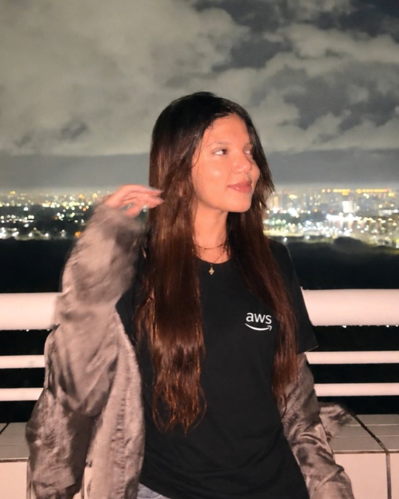

Design & development · Fortaleza, Brazil
Licya Oliveira
Visual identities, websites and content for brands that want to be remembered — from the first sketch to the last line of code.
What I do
I create visual identities, build websites and look after the content that keeps each brand alive. The same eye follows the business from the first sketch to published code — calmly, with intention and attention to detail.
Selected work
Brands I helped build.
Each brand with its own identity. Open a project to see its context, what was done and the material delivered.
About
Design meets development.

I design identities and build websites for businesses. My work often continues into the social posts and everyday materials that bring a brand to life.
I’m studying Systems Analysis and Development at Unichristus. Alongside independent projects, I’ve coordinated technical projects, organized content deliveries and supported cloud learning in student communities.
- Based inFortaleza, Ceará
- StudiesSystems Analysis · Unichristus
- Own projectsSince 2025
Experience
- Independent projectsWeb, visual identity and social media
- Amazon Web ServicesCampus Student Leader
- Reis Marcas e PatentesTechnology Supervisor
- Creative MoonSocial Media
- Infinity SchoolFull Stack Technical Program
Contact
Shall we create something together?
Have a brand, website or content project in mind? Tell me what you’re working on.
rossana.licyarl@gmail.com